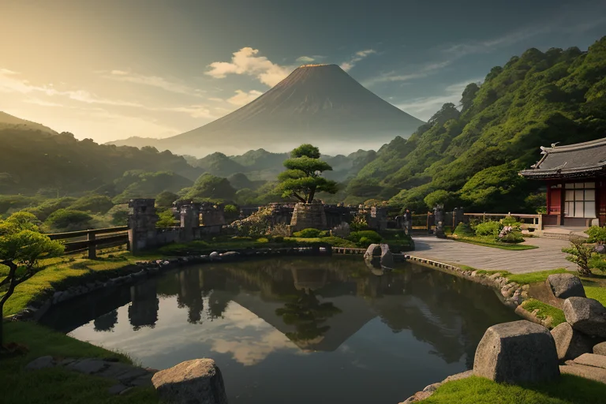
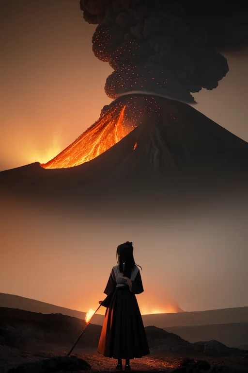
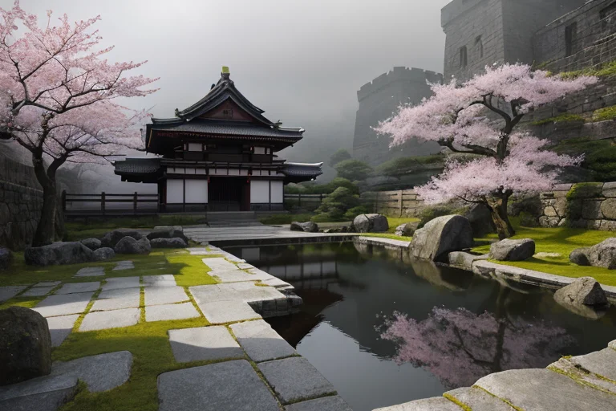
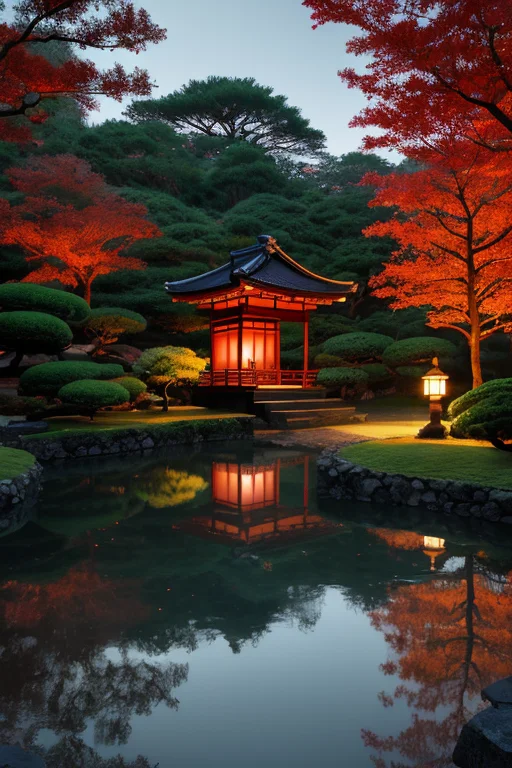
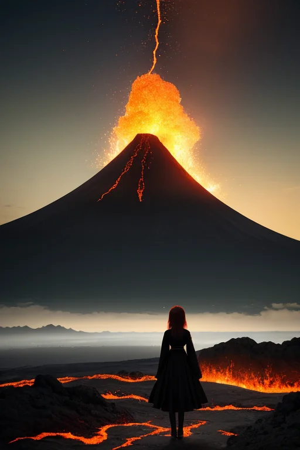

第一章 現実の熊本
あなたはまだ気づいていない。この土地にも、王がいることを。
水前寺成趣園の池面は、空と白砂利の庭を静かに映す。訪れる人々のざわめきも、ここでは吸い込まれるように消え、深い静寂だけが残る。この静けさは、祈りの形だ。熊本という土地は、阿蘇の巨大な火口を抱え、地の底に常に揺らぎを宿している。その上に築かれた生活は、いつも「崩れる」可能性と隣り合わせである。
2016年、その可能性は現実となった。大地は激しく歪み、加藤清正が築いた不落の象徴、熊本城の石垣は大きく崩れた。瓦礫の山が街に影を落とす日々。人々は呆然とし、慟哭し、そして立ち上がるための小さな一歩を探し始めた。
その時、誰も見ることのできない高みで、一人の王が現実を見つめていた。赤と黒の紋章を纏い、激情を内に秘めたその存在は、崩れ落ちる石一つ一つに、理性の炎を灯そうとしていた。彼の名は、クマモトリア・ヴァルカン。歪みを調整するために遣わされた、47人の王の一人である。

第二章 歪みの兆候
阿蘇山の噴煙は、いつもより静かに立ち上っていた。ヴァルカンは中岳火口の縁に立ち、地底から伝わる微細な軋みを感じ取る。2016年4月、熊本を襲った二度の大きな歪み。その衝撃は、彼の王国の基盤を深く揺さぶった。城が崩れ、地面が裂け、人々の祈りが恐怖と絶望の色に染まり始めた瞬間から、彼の内なる炎は激しく揺らいでいた。
「王よ、分散圧が限界に近づいています」
主席妖精ヴァルニアの声が、熱風に乗って聞こえる。彼女は噴気の圧力を細かく分散させ、次の大きな歪みが来る前にエネルギーを逃がそうと躍動していた。しかし、人々の心から漏れ出す「もう立てない」という諦めの念が、地盤の不安定さを増幅させていた。
ヴァルカンは目を閉じた。崩れ落ちた熊本城の石垣、避難所で握られた冷たい手、それでも灯りを探す視線。彼は感情を持たない存在として遣わされた。だが、この土地のあまりに濃密な悲しみと、その底に潜むかすかな希望のきらめきが、彼の理性の内側に、初めて「闘志」という炎を灯した。
崩れても、立てるか？
彼は自らに問いかけ、拳を握りしめた。答えは、まだ見えていない。

第三章 王の葛藤
水前寺成趣園の池面は、地震の数日後、不気味なほど静かだった。散った桜の花びらが水に浮き、微かに揺れている。ヴァルカンはその池畔に立ち、自らの内面を見つめていた。彼の内部では、二つの力が拮抗していた。一つは、この土地の悲しみと絶望をそのまま受け止め、静かに「調整」のみを行うべきだという、王としての理性。もう一つは、石垣の下で、瓦礫の下で、今も消えずに燻る人々の「立て直したい」という熱い想いから生まれた、初めての感情——闘志である。
「崩れても、立てるか」
彼は呟く。答えは出ない。彼に許されたのは、歪みの微調整だけだ。城を元通りにすることはできない。失われた命を取り戻すこともできない。それでも、彼の拳は熱かった。妖精ヴァルニアが放つ噴気の如く、内側で何かが沸き立ち、押さえきれなかった。
彼は目を開け、崩れた熊本城の方角を見た。彼ができることは、ほんのわずかだ。次の余震の衝撃を一分の一減らすこと。避難路の障害となる瓦礫の落下を、ほんの一瞬遅らせること。それだけが、彼に許された「立つ」ための行為だった。その小さな積み重ねの先に、答えはあるのか。彼はただ、深い静寂の中に佇んだ。

第四章 妖精との対話
水前寺成趣園の池面は、余震の後も鏡のように静かだった。王はその縁に立ち、己の内なる熱の収まりを待っていた。
「あなたの闘志は、尊いものです」
傍らに現れたヴァルニアの声は、噴煙のように柔らかく立ち上った。
「しかし、立つとは、ただ強く踏みしめることだけを指すのでしょうか」
彼女は手を伸ばし、池に映る崩れた天守閣の影をそっと撫でた。水面は微かに揺れ、歪んだ城影は、やがて元の形に静かに戻っていく。
「私たちが分散する噴気圧も、あなたが微調整する衝撃も、すべては『流れ』を変えるためのものです。押しとどめ、固守することだけが、立てるということではない」
阿蘇の地下を流れるマグマのように、と彼女は続けた。
「時に、崩れることを受け入れ、その瓦礫の一つ一つに意味を見いだし、そこから新たな配置を模索すること。それもまた、立とうとする意志の現れです。あなたの内なる熱が、破壊の炎ではなく、再構築の炉火となるために。この地は、何度も火と揺れに遭い、その度に祈りを灯してきました。祈りとは、形あるものを守る願いであると同時に、形が変わっても続く命への信頼です」
王は黙ってその言葉を聞き、自らの拳の熱が、少しずつ静かな確信へと変わっていくのを感じた。

第五章 微調整と余韻
阿蘇の外輪山から見下ろす草原は、朝霧に包まれ、静まり返っていた。クマモトリア・ヴァルカンは、城の天守閣ではなく、この見晴らしの良い場所に立っていた。目を閉じると、地の底から伝わる微かな振動、生き物のような山の呼吸が感じられる。彼の役割は、その呼吸の乱れを事前に察知し、ほんのわずか、ほんの一瞬、そのエネルギーを分散させることだ。巨大な力を止めることはできない。ただ、受け止める準備をする時間を、ほんの少しだけ与える。
2016年のあの日以来、彼の内側には確かな変化があった。かつての激情は、地続きの熱として沈殿し、揺れる大地そのものを見守る静かな意志へと変わっていた。崩れた石垣は一つ一つ積み直され、傷ついた心はゆっくりと癒されつつある。彼はその過程を、目に見えない精神波のレベルで微調整していた。絶望の深まりを一寸遅らせ、希望の灯りが消えないよう、ほんの少し風を遮る。
彼は英雄ではない。ただの調整者だ。崩れても、また立とうとするこの地の静かな決意を、彼は知っている。彼自身が、その決意の一部となった。
あなたの町にも、王がいる。